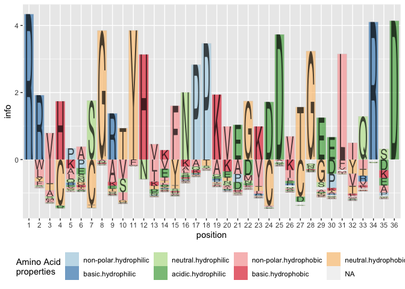
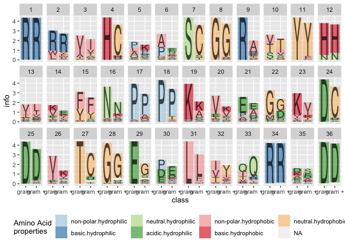
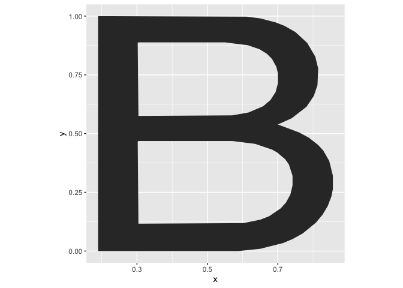
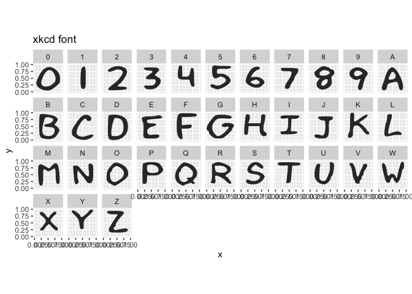

R package for creating sequence logo plots
gglogo is available from CRAN (version 0.1.4):
install.packages("gglogo")The development version is available from Github (0.1.9000):
# install.packages("devtools")
devtools::install_github("heike/gglogo", build_vignettes = TRUE)Getting Started
Load the library
Load a dataset containing a set of peptide sequences
## peptide class
## 1 RWTHLASGRTYNYKFNPPKQYGKDDITGEDLIQRED gram -
## 2 RWTHLNSGRTYHYKFNPPKVHGVDDVTGEPLVQRED gram -
## 3 RWTHLASGRTYNYKFNPPKQYGKDDITGEDLIQRED gram -
## 4 RWTHLASGRTYNYKFNPPKQYGKDDITGEDLIQRED gram -
## 5 RLIHQPSGRSYHEEFNPPKEPMKDDVTGEPLIRRSD gram -
## 6 RRVHPGSGRVYHVVYNPPKVEGKDDETGEELIVRAD gram -Now plot the sequences in a(n almost) traditional sequence plot, the Shannon information is shown on the y axis.
library(ggplot2)
ggplot(data = ggfortify(sequences, peptide, method="shannon")) +
geom_logo(aes(x = position, y = info, group = element,
label = element, fill = interaction(Polarity, Water)),
alpha = 0.6, position = "classic") +
scale_fill_brewer("Amino Acid\nproperties", palette = "Paired") +
theme(legend.position = "bottom") 
(Sequence) Logo plots (Schneider & Stephens 1990) are typically used in bioinformatics as a way to visually demonstrate how well a sequence of nucleotides or amino acids are preserved in a certain region.
A cognitively better version of the plot is the default, i.e. without specifying the position parameter, the plot defaults to aligning the largest contributor in each position along the y axis and showing all other variants in each position by a tail hanging below the axis. Longer tails indicate more variability in a position.
ggplot(data = ggfortify(sequences, peptide, method="shannon")) +
geom_logo(aes(x = position, y = info, group = element,
label = element, fill = interaction(Polarity, Water)),
alpha = 0.6) +
scale_fill_brewer("Amino Acid\nproperties", palette = "Paired") +
theme(legend.position = "bottom") 
Other variants
Besides the Shannon information, we could also visualize the frequencies of peptides in each position. We can either set method = frequency, or calculate the (relative) frequency information ourselves as:
ggplot(data = ggfortify(sequences, peptide, method="shannon")) +
geom_logo(aes(x = position, y = freq/total, group = element,
label = element, fill = interaction(Polarity, Water)),
alpha = 0.6) +
scale_fill_brewer("Amino Acid\nproperties", palette = "Paired") +
theme(legend.position = "bottom") 
Using the classic variant of alignment results in a stacked barchart of amino acids by position:
ggplot(data = ggfortify(sequences, peptide, method="shannon")) +
geom_logo(aes(x = position, y = info, group = element,
label = element, fill = interaction(Polarity, Water)),
alpha = 0.6, position="classic") +
scale_fill_brewer("Amino Acid\nproperties", palette = "Paired") +
theme(legend.position = "bottom") 
Implementation details
This implementation of sequence logos is a two-step process of data prepping/wrangling followed by the visualization. The data prepping happens in the function ggfortify:
library(dplyr)
seq_info <- sequences %>% # data pipeline for processing
ggfortify(
peptide, # variable in which the sequences are stored
treatment = class,
method = "shannon",
missing_encode = c(".", "*", NA)
)sequences specifies the variable of the sequences in the data set, treatment is a (list) of grouping variables for which the (Shannon) information will be calculated in each position. For peptide sequences, the data set aacids is used to provide additional information on properties.
head(seq_info)## element class position freq total info bits Polarity
## 1 A gram - 13 2 923 0.003900781 0.003900781 non-polar
## 2 A gram - 30 31 923 0.083595755 0.083595755 non-polar
## 3 A gram + 16 33 886 0.076015635 0.076015635 non-polar
## 4 A gram - 35 135 923 0.235541625 0.235541625 non-polar
## 5 A gram + 33 2 886 0.006471744 0.006471744 non-polar
## 6 A gram - 17 27 923 0.115479912 0.115479912 non-polar
## Water
## 1 hydrophobic
## 2 hydrophobic
## 3 hydrophobic
## 4 hydrophobic
## 5 hydrophobic
## 6 hydrophobicBy specifying the treatment parameter, the corresponding information methods are now calculated for treatments as well, and we can assess the variability/conservation of the sequence by the treatment:
seq_info %>%
ggplot() +
geom_logo(aes(x = class, y = info, group = element,
label = element, fill = interaction(Polarity, Water)),
alpha = 0.6, position="classic") +
scale_fill_brewer("Amino Acid\nproperties", palette = "Paired") +
theme(legend.position = "bottom") +
facet_wrap(~position, ncol = 12)
Available alphabets
By default, the font used for logo plots is Helvetica, available as dataset alphabet. Each letter is implemented in form of a polygon with x and y coordinates. The variable group contains the corresponding letter.
alphabet %>%
filter(group == "B") %>%
ggplot(aes(x = x, y = y)) + geom_polygon() +
theme(aspect.ratio = 1)
Besides the default alphabet, the fonts Comic Sans, xkcd, and braille (for 3d printing) are implemented:
alphabet_comic %>%
filter(group %in% c(LETTERS, 0:9)) %>%
ggplot(aes(x = x, y = y)) + geom_polygon() +
theme(aspect.ratio = 1) + facet_wrap(~group, ncol = 11) +
ggtitle("Comic Sans")
alphabet_xkcd %>%
dplyr::filter(group %in% c(LETTERS, 0:9)) %>%
ggplot(aes(x = x, y = y)) + geom_polygon() +
theme(aspect.ratio = 1) + facet_wrap(~group, ncol = 11) +
ggtitle("xkcd font")
alphabet_braille %>%
dplyr::filter(group %in% c(LETTERS, 0:9)) %>%
ggplot(aes(x = x, y = y)) + geom_polygon() +
theme(aspect.ratio = 1) + facet_wrap(~group, ncol = 11) +
ggtitle("Braille (use in 3d prints)")
References
Schneider, TD, Stephens, RM (1990). Sequence logos: a new way to display consensus sequences. Nucleic Acids Res, 18, 20:6097-100.